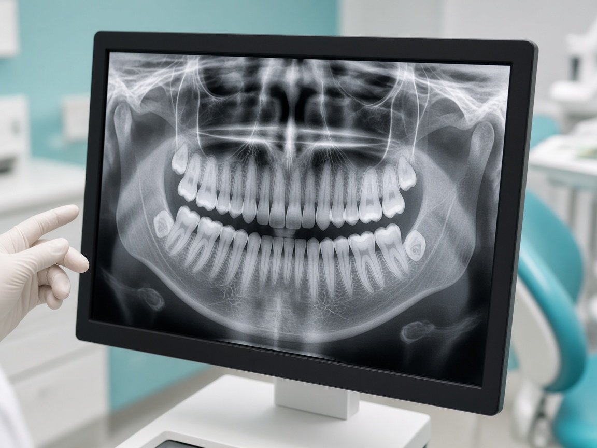
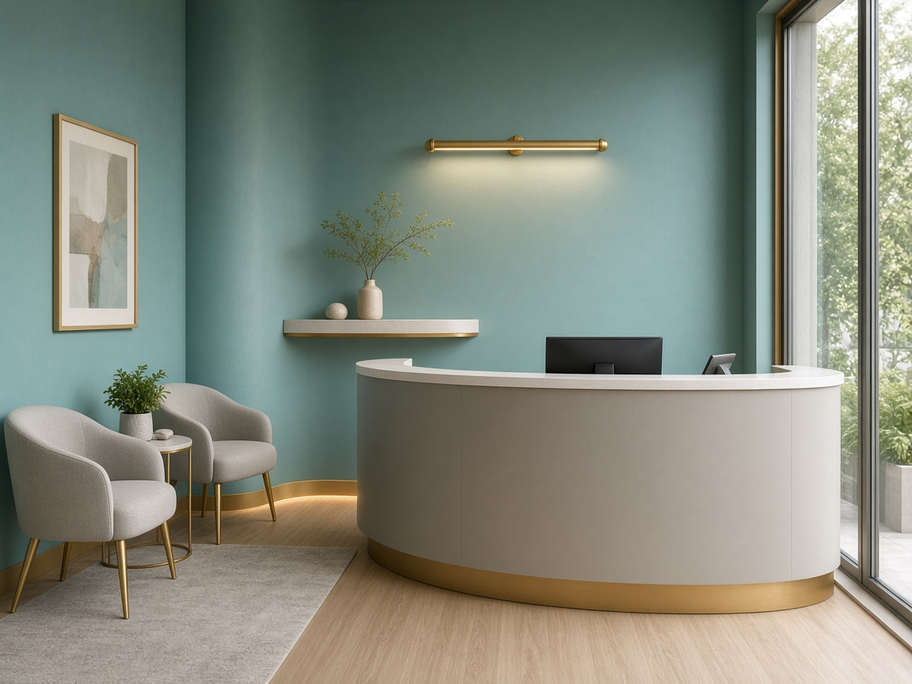

your smile deserves expert care
Routine Dental Check-Ups in Kondapur and Gachibowli
Home | General Checkup
your smile deserves expert care
Home | General Checkup
General Checkup
Routine dental check-ups are essential for maintaining healthy teeth, gums, and long-term oral health. At Ekaa Dentistry, our general dental check-ups include comprehensive preventive dental evaluations that go beyond a basic examination. These evaluations are designed to identify dental issues early, before they become painful or costly. We recommend scheduling a dental check-up every six months, and during these visits, you will also receive a professional dental cleaning. More frequent visits may be advised depending on your oral health needs.
During your routine dental check-ups, our dentist conducts preventive dental evaluations, carefully examining your teeth for cavities, cracks, enamel wear, and early signs of decay. Your gums are also evaluated for inflammation, bleeding, or symptoms of gum disease (periodontitis). When necessary, digital X-rays are used to detect hidden problems such as deep decay, bone loss, or impacted teeth, ensuring a comprehensive assessment alongside your professional dental cleaning.
A professional dental cleaning is an essential aspect of every routine dental check-up. Even with excellent brushing and flossing habits, plaque and tartar can accumulate around the gum line and between teeth. During preventive dental evaluations, specialized dental instruments are used to safely remove these deposits, followed by polishing to leave your teeth smooth, clean, and refreshed. This process helps prevent cavities, gum disease, and bad breath while keeping your smile bright.
During your routine dental check-ups, preventive dental evaluations may recommend treatments to protect your teeth and strengthen enamel. Fluoride applications can help reduce sensitivity and lower the risk of tooth decay, while dental sealants may be suggested—especially for children—to guard the grooves of molars against bacterial buildup. Additionally, a professional dental cleaning can further enhance your oral health.
At Ekaa Dentistry, we offer age-appropriate routine dental check-ups for children, adults, and seniors, ensuring tailored preventive dental evaluations and professional dental cleaning as part of our comprehensive preventive care.
At Ekaa Dentistry, we utilize in-house Digital X-rays and modern diagnostic tools to provide preventive dental evaluations, helping us identify hidden dental issues with precision and safety. Our commitment to routine dental check-ups and professional dental cleaning ensures your oral health remains a top priority.
At Ekaa Dentistry, we believe that prevention starts at home. That's why during your visit, we provide personalized guidance on proper brushing and flossing techniques, along with dietary advice to support healthy teeth and gums. We also emphasize the importance of routine dental check-ups and preventive dental evaluations to catch any issues early on. Our goal is to empower you with simple, effective habits for everyday oral care, complemented by professional dental cleaning when needed.
Routine dental check-ups are essential for maintaining oral health, as they also allow us to assess existing restorations like fillings, crowns, and bridges to ensure they remain strong and functional. During these preventive dental evaluations, if you have concerns such as teeth grinding (bruxism) or TMJ disorders, our dentist will provide tailored advice and treatment recommendations. Whether you're considering dental implants, root canal treatment, or simply want to maintain a healthy smile, regular check-ups and professional dental cleaning are the foundation of good oral health.
If you are looking for a reliable dental specialist in Serilingampalle, Kondapur, or Gachibowli, our team at Ekaa Dentistry is here to help you restore your smile safely and beautifully. We offer preventive dental evaluations, professional dental cleaning, and routine dental check-ups to ensure your oral health is in top shape. 📞 Call or WhatsApp us today 📅 Book your dental implant consultation now
Call or Whatsapp us on +91 9030121100
Please reach us at +91 9030121100 if you cannot find an answer to your question.
How often should I get a routine dental check-up? Most patients should visit the dentist every six months for a routine dental check-up. However, individuals with gum disease, frequent cavities, or other dental concerns may require more frequent visits as recommended by the dentist.
What is included in a routine dental check-up? A routine dental check-up includes a comprehensive examination of your teeth and gums, screening for cavities and gum disease, professional dental cleaning, and digital X-rays when needed to detect hidden dental issues.
Are dental check-ups painful? Routine dental check-ups are generally painless. Professional cleaning and examinations are performed gently, and our team ensures patient comfort throughout the visit.
Why are dental X-rays needed during check-ups? Dental X-rays help identify problems that are not visible during a clinical examination, such as early tooth decay, bone loss, impacted teeth, and infections.
Does a dental check-up include teeth cleaning? Yes, most routine dental check-ups include professional teeth cleaning to remove plaque and tartar buildup, helping prevent cavities, gum disease, and bad breath.
Are routine dental check-ups important even if I have no pain? Yes. Many dental problems develop without noticeable pain. Regular dental check-ups help detect issues early, allowing for simpler and more effective treatment.
Can children get routine dental check-ups at Ekaa Dentistry? Yes, Ekaa Dentistry provides routine dental check-ups for children, including preventive care, dental sealants, fluoride treatments, and juice for healthy oral habits.
How long does a routine dental check-up take? A routine dental check-up typically takes 30 to 45 minutes, depending on the patient’s oral health condition and whether X-rays or additional preventive treatments are required.
This content is reviewed by our Dental Specialists with extensive experience in regular dental procedures- All the above servces are available at Ekaa Dentistry- Serilingampalle, Kondapur near Gachibowli.
Ekaa Dentistry – Best Dental Clinic in Kondapur & Gachibowli Ekaa Dentistry is a trusted multispeciality dental clinic in Kondapur, Hyderabad, located near the Serilingampalle–Kondapur–Gachibowli corridor. If you are searching for a dentist near me, best dental clinic near Gachibowli, or a family dentist in Kondapur, our specialist-led team provides comprehensive and comfortable dental care for all age groups. Our services include general dentistry, cosmetic dentistry, root canal treatment, dental implants, braces and Invisalign, laser dentistry, pediatric dentistry, gum treatments (periodontics), oral and maxillofacial surgery, and in-house OPG X-ray diagnostics, ensuring accurate diagnosis and complete care under one roof. We proudly serve patients from Kondapur, Gachibowli, Serilingampalle, Masjid Banda, Hitech City, Madhapur, Hafeezpet, and nearby areas. With advanced dental technology, ethical treatment planning, and a strong focus on patient comfort, Ekaa Dentistry is committed to long-term oral health and confident smiles. 📍 Location: Serilingampalle, Kondapur, Hyderabad – Near Gachibowli
📞 Appointments: Call or book online at +91 9030121100
🕒 Timings: Mon–Sun | Specialist Consultations Available © 2026 Ekaa Dentistry. All Rights Reserved.
Powered by



